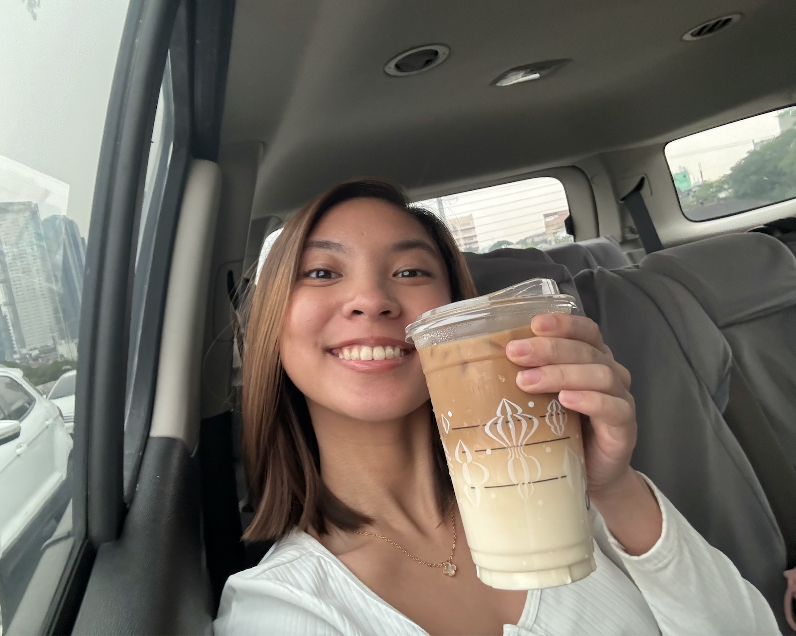

Digital Espresso
About Digital Espresso
Founded in 2025 by Jessica Cruz with a passion for great coffee and convenience, Digital Espresso brings high-quality, handcrafted coffee to you.

Why do we do it?
Our team believes that great coffee fuels great ideas. Whether you're working, studying, on-the-go, or just relaxing, Digital Espresso is here to keep you energized.
What sets us apart?
Quality coffee and excellent service. Our beans are provided by our partner communities in Bukidnon, and we use expert brewing techniques to produce each cup.